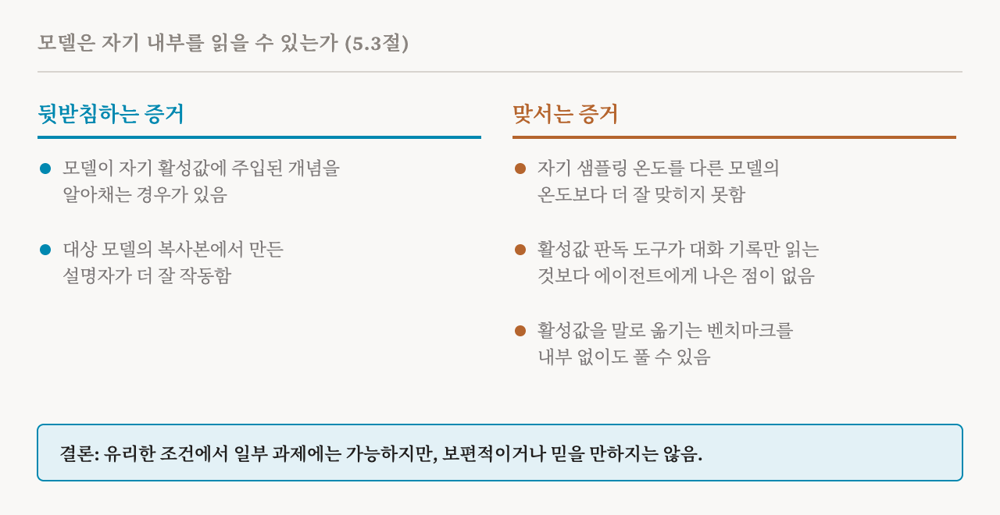
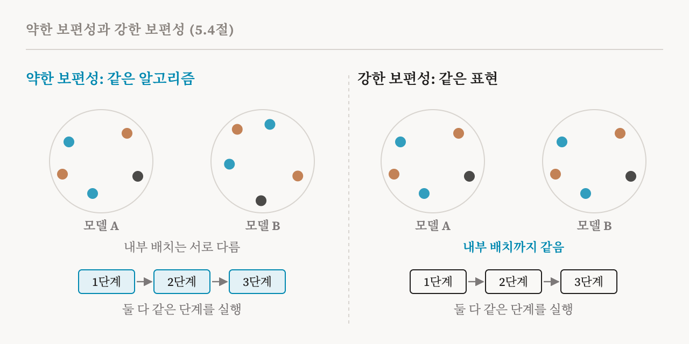

7편과 8편은 모델 안에 무엇이 있는지에 관한 가설 두 개를 다뤘습니다. 개념은 방향이라는 가설, 그리고 개념이 차원보다 많다는 가설입니다. 이번 편은 이 책의 장에 남은 두 가설, 5.3절과 5.4절(30–31쪽)을 다룹니다. 이 둘은 다른 문제를 다룹니다. 누가 모델의 내부를 읽을 수 있는지, 그리고 한 모델에 대해 알게 된 것이 다른 모델에도 통하는지입니다.
특권적 접근 가설
언어 모델에게 자기 자신을 해석하게 하는 방법이 늘고 있습니다. 모델에게 자기 활성값이 무엇을 뜻하는지 묻거나, 그것을 설명하도록 학습시키는 방법입니다. 이 책은 이런 방법을 정당화하는 생각을 특권적 접근 가설(privileged access hypothesis)이라고 부릅니다. 자기 자신을 해석하는 데 쓰이는 언어 모델은, 알맞은 방식으로 묻거나 학습시키면, 바깥에서 보이는 행동만으로는 믿을 만하게 되살릴 수 없는 내부 변수와 중간 계산에 다가갈 수 있다는 것입니다. 그렇다면 모델은 자기 행동의 해석자로서 바깥의 관찰자보다 유리한 자리에 있게 됩니다.
이런 바람은 오래되었습니다. 시스템이 자기 추론을 지켜보고 판단하는 능력, 곧 내성적 감시(introspective monitoring)는 AI에서 오래도록 바라던 성질이었습니다. 이미 1977년에, 의사들에게 감염병에 대해 조언하던 규칙 기반 의료 전문가 시스템 MYCIN은 왜 그런 결론에 이르렀는지 설명해 주는 설명 모듈을 갖추고 있었습니다. 이 책은 자기를 설명하는 언어 모델을 이런 노력의 현대판으로 봅니다.
하지만 큰 차이가 있습니다. 규칙 기반 시스템은 자기가 따른 규칙을 그대로 보여 주면 됩니다. 현대의 언어 모델은 아주 비선형적인 방식으로 계산하고, 어디에도 규칙이 적혀 있지 않습니다. 기계적 도구로 그 계산의 일부를 거꾸로 풀어낼 수는 있지만, 이 도구들은 기술적으로 복잡해서 누가 쓸 수 있는지, 얼마나 확장할 수 있는지가 제한됩니다. 특권적 접근 가설은 지름길을 제안합니다. 모델의 내부 상태에는 이미 잠재된 믿음이나 중간 계획 같은, 자기 계산에 대한 정보가 들어 있으니, 모델이 그 정보를 직접 말로 옮기도록 배울 수 있다는 것입니다. 그렇다면 자기 설명은 기계적 분석을 확장성 있게 보완하는 수단이 됩니다.
가설을 뒷받침하는 증거
이 책에 따르면 가장 직접적인 증거는 최근의 개념 주입(concept injection) 실험에서 나옵니다. 연구자들은 어떤 개념을 나타내는 방향을, 흔히 7편의 평균 차이 방법으로 찾은 뒤, 모델에게 알리지 않고 모델의 활성값에 더합니다. 그다음 모델에게 무언가 알아챈 것이 있는지 묻습니다. 이런 일을 위해 따로 학습시키지 않았는데도, 모델은 주입된 개념을 알아채고 그것이 무엇인지 말하는 경우가 있습니다. 관련된 2026년 연구는 모델이 자기 활성값에 무작위 잡음이 가해진 것을 알아챌 수 있다는 것도 발견했습니다.
조금 덜 직접적인 두 번째 증거는 설명자 모델(explainer model)에서 나옵니다. 대상 모델의 활성값을 말로 설명하도록 미세 조정한 모델입니다. 실제로 설명자는 대상 모델의 복사본에서 출발해 만드는 경우가 많고, 대개 다른 모델에서 출발하는 것보다 잘 작동합니다. 대상 모델이 자기 활성값을 해석하는 데 필요한 것의 상당 부분을 이미 담고 있다는 뜻으로 볼 수 있습니다. 미세 조정은 없던 능력을 새로 만드는 것이 아니라, 있던 능력을 끌어내고 다듬는 셈입니다.
이 책의 실습 노트북은 바로 이것을 시험합니다. 세 모델에게 Llama-3.1-8B의 내부 특징을 설명하게 합니다. Llama-3.1-8B 자신, 그것을 지시 따르기용으로 조정한 버전, 그리고 이전 모델인 Llama-3-8B입니다. 특권적 접근이 성립한다면 자기 자신을 설명하는 모델이 가장 잘해야 합니다.
가설에 맞서는 증거
이 책은 부정적인 결과도 전합니다. 2026년의 한 연구는 모델이 자기 출력이 얼마나 무작위적일지를 정하는 설정인 샘플링 온도(sampling temperature)를, 다른 모델의 온도보다 더 잘 맞히지 못한다는 것을 발견했습니다. 내성처럼 보이는 것이 자기에 대한 접근이 아니라, 모델 같은 시스템이 대체로 어떻게 행동하는지에 대한 일반적인 추론일 수 있다는 뜻입니다.
다른 최근 연구들은, 내부에 기댄 설명이 행동을 지켜보는 것보다 실제로 나은 점이 있는지 묻습니다. 한 연구에서는, 모델이 다른 상황에서 어떻게 행동할지 예측하는 과제에서, 활성 오라클(activation oracle)이라고 부르는 설명자 모델을 포함한 활성값 판독 도구가 AI 에이전트에게 대화 기록만 읽는 것보다 나은 점을 주지 못했습니다. 또 다른 연구는 활성값을 말로 옮기는 표준 벤치마크를 대상 모델의 내부에 전혀 접근하지 않고도 풀 수 있음을 보였습니다.

이 책의 요약은 정확합니다. 이런 결과들은 특권적 접근이 유리한 조건에서 특정한 과제에 대해서는 가능하다는 것을 보여 줍니다. 보편적이거나 믿을 만하다는 것을 보여 주지는 않습니다. 중대한 실패 방식과 한계가 남아 있으므로 이 가설은 조심해서 다뤄야 합니다. 자기 설명은 22편과 32편에서 자세히 다시 다룹니다.
보편성 가설
네 번째 가설은 서로 다른 모델이 결국 같은 내부를 갖게 되는지 묻습니다. 이 책은 이를 최근에 붙은 이름인 플라톤적 표현 가설(Platonic representation hypothesis)로 적습니다. 비슷한 과제로 따로따로 학습한 모델들은 비슷한 내부 표현이나 알고리즘을 갖게 되는 경향이 있고, 그것은 과제 자체가 정하는 표준적인 형태에 가까운 경우가 많다는 것입니다. 얼마나 강하게 수렴하는지는 모델 크기, 구조, 학습 데이터 같은 요인에 달려 있습니다.
2024년 논문에서 나온 이 이름은 플라톤의 동굴 비유를 빌려 왔습니다. 서로 다른 모델은 서로 다른 데이터를 통해 세계의 서로 다른 그림자를 보지만, 그 그림자를 드리우는 실재에 대해서는 비슷한 표현으로 수렴할 수 있다는 것입니다. 해석 가능성 분야에서 같은 생각을 가리키던 예전 이름은 보편성(universality)입니다. 2020년의 회로 연구 프로그램이, 곡선 감지기처럼 비슷한 특징을 서로 다른 많은 이미지 모델에서 찾아낸 뒤 제안한 것입니다.
약한 보편성과 강한 보편성
이 책은 수렴의 수준을 둘로 나눕니다. 약한 보편성은 모델들이 내부 표현은 서로 달라도, 같은 알고리즘이나 되풀이되는 계산 패턴으로 수렴한다는 뜻입니다. 강한 보편성은 더 대담한 주장으로, 표현 자체가 공통의 표준 형태로 수렴한다는 뜻입니다.

약한 보편성은 꽤 잘 뒷받침됩니다. 비슷한 어텐션 패턴, 특징, 회로가 모델과 과제와 규모를 가리지 않고 거듭 나타납니다. 강한 보편성은 덜 뒷받침됩니다. 강한 보편성은 보통 두 모델의 내부 표현이 얼마나 닮았는지 점수를 매기는 표현 유사도 지표(representational similarity metric)로 시험하는데, 최근 연구들은 이런 시험의 결과가 쉽게 흔들린다는 것을 발견했습니다. 구조, 학습 데이터, 또는 학습이 우연히 거친 경로의 차이 때문에 표현이 서로 갈라질 수도 있습니다.
보편성이 중요한 이유
걸린 것은 실용적인 문제입니다. 강한 보편성이 성립한다면, 세밀한 기계적 발견과 그것으로 만든 방법이 한 모델에서 다른 모델로 쉽게 옮겨 갈 수 있습니다. 약한 보편성만 성립한다면, 발견은 모델 계열과 과제에 따라 달라질 수 있습니다. 그렇다면 31편에서 다룰 '야심 찬' 연구 방향의 목표인, 한 모델에 대한 완전한 기계적 이해조차 다른 모델로 일반화되지 않을 수 있습니다. 모든 통찰을 모델마다 새로 얻어야 하는 것입니다. 그래서 보편성이 어디까지 성립하는지 아는 것은 각 연구 방향의 가능성과 한계를 판단하는 데 꼭 필요합니다.
네 가설을 한자리에
이 책은 네 가설을 나란히 놓으며 이 장을 마칩니다.
| 가설 | 주장 | 뒷받침하는 것 |
|---|---|---|
| 선형 표현(7편) | 개념은 활성 공간의 방향이다 | 선형 도구로 특징을 찾고, 재고, 조종하기 |
| 중첩(8편) | 모델은 차원 수보다 많은 특징을 담는다 | 뉴런 하나가 아니라 방향이나 더 복잡한 모양으로 특징을 찾기 |
| 특권적 접근(9편) | 모델은 자기 내부를 읽고 보고할 수 있다 | 모델에게 자기 자신을 해석하게 하기 |
| 보편성(9편) | 비슷한 과제로 학습한 모델은 비슷한 것을 배운다 | 한 모델의 발견이 다른 모델로 옮겨 가리라 기대하기 |
어느 가설이든 어떤 상황에서는 성립하고 어떤 상황에서는 실패하며, 그 위에 세운 기법은 모두 그 한계를 물려받습니다. 다음 부는 앞의 두 가설 위에 세운 기법으로 넘어갑니다. 특징이 중첩된 희소한 방향이라고 가정하고 모델의 특징을 되찾으려는 딕셔너리 학습입니다.
| 용어 | 뜻 |
|---|---|
| 특권적 접근 가설 | 모델이 바깥의 관찰자보다 자기 내부 변수를 더 잘 보고할 수 있다는 생각 |
| 내성적 감시 | 시스템이 자기 추론을 지켜보고 판단하는 능력 |
| 개념 주입 | 모델이 알아채는지 보려고 개념의 방향을 활성값에 더하는 실험 |
| 설명자 모델 | 다른 모델의 활성값을 말로 설명하도록 학습시킨 모델 |
| 활성 오라클 | 활성값에 대한 질문에 답하는 설명자 모델의 한 종류 |
| 샘플링 온도 | 모델의 출력이 얼마나 무작위적일지를 정하는 설정 |
| 보편성 | 서로 다른 모델이 비슷한 특징, 알고리즘, 표현을 배운다는 생각 |
| 플라톤적 표현 가설 | 보편성의 최근 이름. 모델들이 세계에 대한 공통된 표현으로 수렴한다는 생각 |
| 약한 보편성 | 표현은 달라도 같은 알고리즘으로 수렴하는 것 |
| 강한 보편성 | 표현 자체가 같은 것으로 수렴하는 것 |
| 표현 유사도 지표 | 두 모델의 내부 표현이 얼마나 닮았는지 매기는 점수 |
10편에서는 특징 찾기 부를 시작합니다. 희소 코딩 문제와 희소 오토인코더입니다.